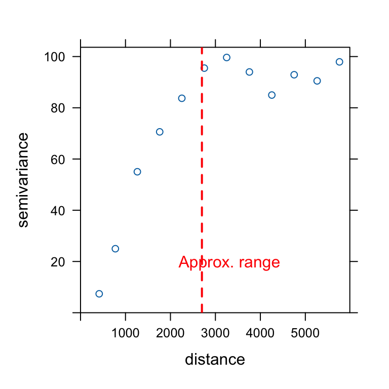
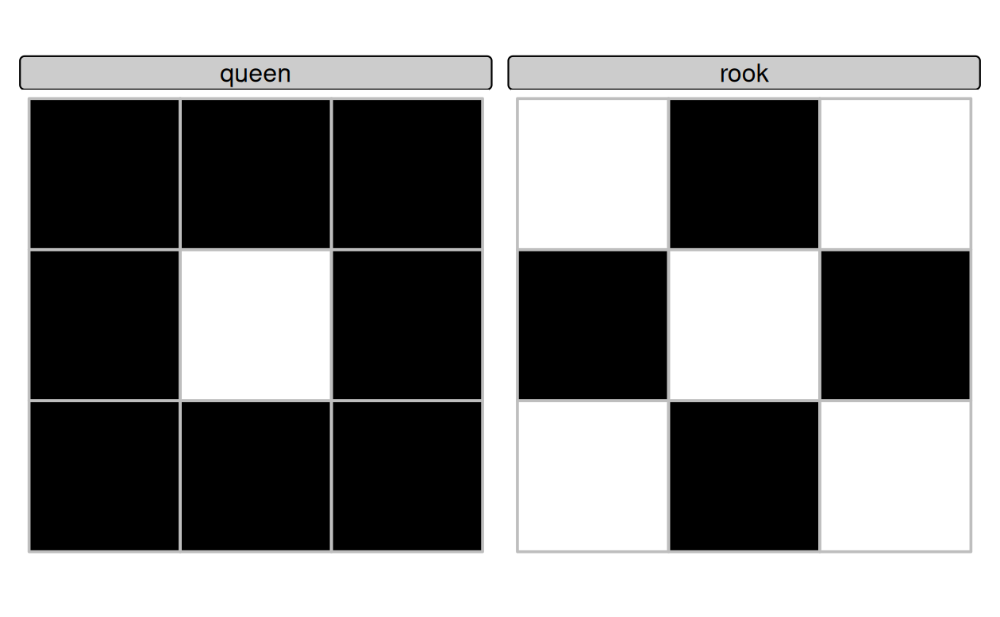
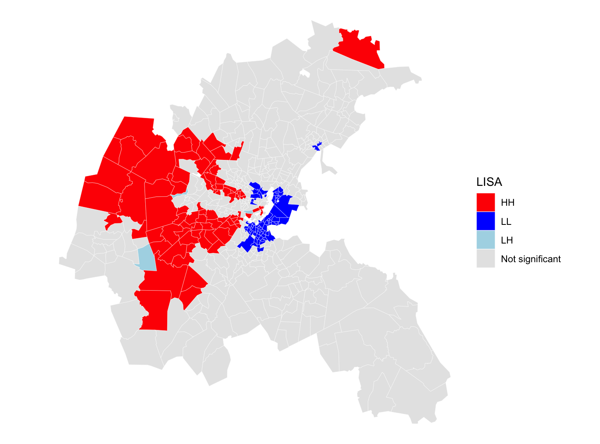
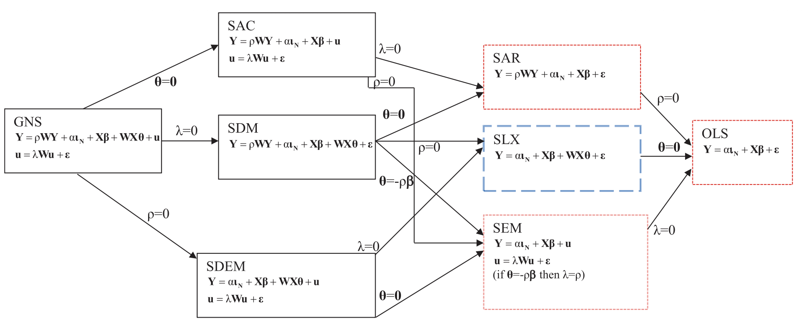

Sant’Anna School of Advanced Studies
Matteo Coronese
m.coronese@santannapisa.it
June 2026
“Everything is related to everything else, but near things are more related than distant things.”
- Tobler’s First Law of Geography
Space is not only a data format. It is a source of dependence that affects both prediction and causal inference:
As a consequence, observations located close in space are often not independent.
Spatial dependence arises when observations are statistically dependent across space because of interactions, spillovers, or shared environments.
Consider the standard linear model:
\[ \mathbf{y} = \beta\mathbf{X} + \mathbf{\varepsilon} \]
Key assumptions underlying OLS estimation and inference:
\[ 1) \quad E[\varepsilon_i \varepsilon_j] = 0 \qquad i \neq j \] Errors are uncorrelated across observations.
\[ 2) \quad E[\mathbf{\varepsilon} | \mathbf{X}] = 0 \] Exogeneity: regressors are uncorrelated with the errors.
Spatial dependence creates two distinct problems:
Different methods address these problems differently.
Different models encode different assumptions about how space operates:
The distinction is useful pedagogically, but in practice different mechanisms often coexist. You often need theory to distinguish among the various alternatives.
Spatial dependence
│
▼
What mechanism generates
spatial dependence?
│
┌──────────────────┴──────────────────┐
│ │
▼ ▼
Correlated errors Spatial interactions
Cov(εᵢ, εⱼ) ≠ 0 are omitted
│ E[ε|X] ≠ 0
│ │
Need robust What interacts?
inference only? │
│ │
│ │
┌────┴────┐ ┌──────┴──────┐
│ │ │ │
▼ ▼ ▼ ▼
Yes No Neighboring Neighboring
│ │ covariates outcomes
│ │ │ │
▼ ▼ ▼ ▼
Conley SEM SLX SARSuppose we study the effect of temperature on income:
\[ Income_i = \beta Temp_i + \varepsilon_i \]
The key question is: Does spatial dependence remain after conditioning on observed covariates?
Spatial clustering in income
↓
Temperature may explain part of it
↓
Estimate OLS: Income ~ Temp
↓
Do income still cluster after conditioning
on temperature (i.e. do residual still cluster?)
│
┌────────┴────────┐
│ │
No Yes
│ │
Observed X Unexplained spatial
accounts for dependence remains
the clustering │
▼
Spatial methodsDifferent mechanisms might explain spatial correlation. A heatwave arrive in Pisa:
| Mechanism | Pisa–Livorno example | Consequence | |
|---|---|---|---|
| Shared shocks | Pisa and Livorno share unobserved regional factors | (Cov(\(\varepsilon_i\),\(\varepsilon_j\))\(\neq0\)) | |
| Covariate spillovers | Workers commute: temperature in Pisa affects income in Livorno | Omitted neighboring covariates → endogeneity \((E[\varepsilon|X]\neq0)\) | |
| Outcome spillovers | Lower income in Pisa affects economic activity in Livorno | Omitted neighboring outcome → simultaneity \((E[\varepsilon|X]\neq0)\) |
A variogram describes how the dissimilarity (semi-variance) between observations changes with distance. The variogram does not require a pre-specified spatial structure: it directly relies on pairwise distances between observations.
\[ \text{Semivariance} \quad \gamma(h) = \frac{1}{2N(h)} \sum_{(i,j)\in h} (Z_i-Z_j)^2 \]
The variogram is obtained by computing the semivariance for increasing distance classes (binning, e.g. 0–50 km, 50–100 km, etc.).

We estimate a simple hedonic model of housing prices:
\[ MEDV_i = \beta_0 + \beta_1 CRIM_i + \beta_2 RM_i + \beta_3 NOX_i + \beta_4 LSTAT_i + \varepsilon_i \]
where:
We then compute the variogram of the OLS residuals. Residual semivariance remains lower at short distances.
Spatial dependence may persist even after controlling for observable characteristics, potentially violating the OLS assumption of independent errors.
Spatially correlated residuals violate the OLS assumption of independent errors:
\[ E[\varepsilon_i \varepsilon_j] = 0 \qquad i \neq j \]
Conley standard errors relax this assumption by allowing residual correlation to decay with geographic distance.
Idea: Nearby observations may share common shocks, while observations beyond a chosen cutoff distance are assumed independent.
Importantly, Conley does not modify coefficient estimates. Only the estimated uncertainty changes:
\[ \hat{\beta}_{Conley} = \hat{\beta}_{OLS} \qquad SE_{Conley} \neq SE_{OLS} \] In this example, we use a 2 km cutoff, consistent with the range suggested by the residual variogram.
mf mf.1
Dependent Var.: MEDV MEDV
Constant -2.519 (3.305) -2.519 (11.80)
CRIM -0.1026** (0.0328) -0.1026* (0.0499)
RM 5.219*** (0.4439) 5.219** (1.710)
NOX -0.1224 (2.684) -0.1224 (6.046)
LSTAT -0.5774*** (0.0535) -0.5774*** (0.1516)
_______________ ___________________ ___________________
S.E. type IID Conley (2km)
Observations 506 506
R2 0.64585 0.64585
Adj. R2 0.64303 0.64303
---
Signif. codes: 0 '***' 0.001 '**' 0.01 '*' 0.05 '.' 0.1 ' ' 1Spatial methods require specifying which observations can interact with each other.
Unlike time series, space does not provide a natural ordering of observations:
A spatial weights matrix (\(\mathbf{W}\)) formalizes the notion of neighborhood by encoding the strength of spatial interactions between units.
The resulting matrix has this form:
\[ \mathbf{W} = \begin{bmatrix} 0 & w_{12} & \cdots & w_{1n} \\ w_{21} & 0 & \cdots & w_{2n} \\ \vdots & \vdots & \ddots & \vdots \\ w_{n1} & w_{n2} & \cdots & 0 \end{bmatrix} \]
Simple idea:
\[ w_{ij} = \begin{cases} >0 & \text{if units } i \text{ and } j \text{ are neighbors} \\ 0 & \text{otherwise} \end{cases} \]
Typically:
Spatial econometric models require two separate choices:
The first question defines the neighborhood structure:
| Approach | Definition | Typical data |
|---|---|---|
| Contiguity | Units sharing a border | Polygons |
| Distance bands | Units within a fixed distance | Points or polygons |
| k-nearest neighbors (kNN) | Each unit is connected to its \(k\) closest neighbors | Points or polygons |
Other approaches include graph-based methods (e.g. Delaunay or sphere-of-influence graphs), kernels, or economic networks (e.g. trade or commuting flows).
The second question defines the strength of spatial interactions:
\[ w_{ij} \in \{0,1\}, \qquad w_{ij} = \frac{1}{d_{ij}}, \qquad w_{ij} = \frac{1}{d_{ij}^2}, \ldots \]
A common practice is row-standardization, so that the weights in each row sum to one. This makes spatial lags easier to interpret as neighborhood averages, although it is not always appropriate.
Contiguity is defined for areal units (polygons).
Two units are considered neighbors when they share a common boundary.
Two common definitions are:

Neighbor relations can also be defined using geographic distance.
Two observations are considered neighbors if:
\[ d_{min} < d_{ij} < d_{max} \]
where \(d_{min}\) and \(d_{max}\) are chosen by the researcher.
Unlike contiguity, distance-based neighbors can be applied to both point-referenced and areal data.
When working with areal data, distances are often computed between centroids.
The choice of the distance band is conceptually similar to the cutoff used in Conley standard errors.
Distance bands may leave some observations without neighbors.
A common alternative is k-nearest neighbors (kNN), where each observation is connected to its \(k\) closest neighbors.
This ensures that every unit has at least \(k\) neighbors:
\[ N_i = \{j_1, j_2, \ldots, j_k\} \]
where \(N_i\) denotes the set of the \(k\) nearest neighbors of observation \(i\).
A spatial weights matrix encode the binary information in the graph, plus the strength of spatial interactions.
Different weighting schemes = different assumptions:
[1] 1 1 1 1 1 1 1 1[1] 492 495 496 497 498 500 501 502 505[1] 8361.259 6981.702 9082.101 8009.954 5338.481 6660.773 7131.115 7867.346
[9] 9236.959[1] 0.0001195992 0.0001432316 0.0001101067 0.0001248447 0.0001873192
[6] 0.0001501327 0.0001402305 0.0001271077 0.0001082607[1] 0.0001195992 0.0001432316 0.0001101067 0.0001248447 0.0001873192
[6] 0.0001501327 0.0001402305 0.0001271077 0.0001082607Once a spatial weights matrix \(\mathbf{W}\) has been defined, it can be used as an operator acting on variables.
For any variable \(\mathbf{x}\), \(\mathbf{Wx}\) computes a (weighted) average of neighboring values.
If \(\mathbf{W}\) is row-standardized, \((Wx)_i = \sum_j w_{ij}x_j\) can be interpreted as the (weighted) average value of variable \(x\) among the neighbors of unit \(i\).
Examples:
Spatial econometric models differ mainly in which spatial lag enters the model.
Suppose unit \(i\) has three neighbors:
Its spatial lag is:
\[ Wy_i = 0.2 \times 10 + 0.3 \times 20 + 0.5 \times 30 = 23 \]
The spatial lag is therefore a weighted average of neighboring values.
Global Moran’s I measures whether similar values tend to occur near each other in space.
Intuition:
Moran’s I can be interpreted as the spatial analogue of a correlation coefficient. It combines:
Values of Moran’s I are interpreted as:
\[ I > 0 \quad \text{positive spatial autocorrelation (clustering)} \]
\[ I \approx 0 \quad \text{absence of spatial autocorrelation} \]
\[ I < 0 \quad \text{negative spatial autocorrelation (dispersion)} \]
Once a spatial weights matrix (\(W\)) has been specified, Moran’s I provides a formal test of spatial autocorrelation.
\[ H_0:\ \text{no spatial autocorrelation} \qquad (I \approx E[I]=-1/(n-1)) \]
| Variable | Moran’s I | p-value |
|---|---|---|
| MEDV | 0.63 | < 0.001 |
| OLS residuals | 0.49 | < 0.001 |
In particular, Moran’s I measures the association between a variable and its spatial lag.
The Moran scatterplot relates the value observed in a location to the average value observed among its neighbors.
Formally, Moran’s I is given by
\[ I=\frac{n}{S_0} \frac{\mathbf z'W\mathbf z} {\mathbf z'\mathbf z} \]
where: \(S_0=\sum_i\sum_j w_{ij}\) is the sum of all spatial weights (\(n\) if \(W\) is row-standardized)
Global Moran’s I summarizes spatial autocorrelation using a single number.
However, spatial dependence is often heterogeneous across space.
LISA decomposes global Moran’s I into observation-specific contributions:
\[ I_i = z_i (Wz)_i \]
where:
LISA therefore identifies where spatial clustering occurs.
Ii E.Ii Var.Ii Z.Ii Pr(z != E(Ii))
1 -0.34575085 -5.254157e-04 0.032753760 -1.9075336 0.05645152
2 0.01758754 -1.626873e-05 0.002045711 0.3892105 0.69712044A LISA map can be thought of as the Moran scatterplot projected back into geographic space.

Spatial diagnostics can reveal spatial dependence, but they rarely identify its source. A possible empirical workflow is:
| Mechanism | Model | Equation |
|---|---|---|
| Shared shocks / correlated errors | SEM | \(y=X\beta+u\) \(u=\lambda Wu+\varepsilon\) |
| Neighboring covariates matter | SLX | \(y=X\beta+WX\theta+\varepsilon\) |
| Neighboring outcomes matter | SAR | \(y=\rho Wy+X\beta+\varepsilon\) |
Diagnostics can provide useful guidance:
| Question | Test in R |
|---|---|
| Residual spatial dependence? | moran.test(resid(m), lw_W), localmoran() |
| SAR or SEM? | lm.RStests(m, lw_W) |
There is no general diagnostic test for SLX.
In practice, SLX is often used as a flexible starting point because it imposes weaker assumptions (and is less sensitive to \(\mathbf{W}\)):
The SLX model assumes that neighboring characteristics directly affect local outcomes.
Examples:
The model augments OLS with spatially lagged covariates:
\[ \mathbf y= \mathbf X\beta+ \mathbf{WX}\theta+ \varepsilon \]
where:
SLX therefore models spatial spillovers in explanatory variables.
Interpretation: \(\beta\): direct effects; \(\theta\): spillover effects.
boston_utm$W_CRIM <-
lag.listw(
lw_W,
boston_utm$CRIM
)
boston_utm$W_LSTAT <-
lag.listw(
lw_W,
boston_utm$LSTAT
)
slx <- lm(
MEDV ~
CRIM + RM + NOX + LSTAT +
W_CRIM + W_LSTAT,
data = boston_utm
)
moran.test(resid(slx),lw_W)
#We need lat lon to use conley, reproject
boston_wgs <- st_transform(boston_utm, 4326)
coords <- st_coordinates(
st_centroid(boston_wgs)
)
boston_wgs$lon <- coords[,1]
boston_wgs$lat <- coords[,2]
slx <- feols(
MEDV ~ CRIM + RM + NOX + LSTAT +
W_CRIM + W_LSTAT,
data = boston_wgs
)
summary(
slx,
vcov = vcov_conley(
lat = "lat",
lon = "lon",
cutoff = 2
)
)| Variable | OLS | SLX | SLX + Conley |
|---|---|---|---|
| CRIM | -0.103** | -0.089* | -0.089* |
| RM | 5.219*** | 5.253*** | 5.253** |
| NOX | -0.122 | 3.161 | 3.161 |
| LSTAT | -0.577*** | -0.426*** | -0.426** |
| W_CRIM | — | 0.062 | 0.062 |
| W_LSTAT | — | -0.319*** | -0.319* |
| Adj. \(R^2\) | 0.643 | 0.651 | 0.651 |
The SAR model assumes that outcomes directly interact across space.
Examples:
The model is:
\[ \mathbf y= \rho \mathbf{Wy} +\mathbf X\beta +\varepsilon \]
Unlike SLX, SAR generates feedback loops: shocks propagate through the spatial network
The model cannot be estimated by OLS because \(\mathbf{Wy}\) is endogenous. Maximum likelihood jointly estimates \(\rho\) and \(\beta\).
Coefficients:
Estimate p-value
CRIM -0.046 0.085
RM 4.514 <0.001 *** SAR coefficients are NOT marginal effects
NOX 3.543 0.101
LSTAT -0.304 <0.001 ***
Rho: 0.54666, LR test value: 188.84, p-value: < 2.22e-16 #strong positive spatial dependence feedbacks
AIC: 2980.4, (AIC for lm: 3167.2) #model fit has improved
LM test for residual autocorrelation
test value: 37.175, p-value: 1.0799e-09 #still spatial dependence remainingTo retrieve marginal effects:
The SEM model assumes that spatial dependence arises from unobserved factors.
Examples:
The model is:
\[ \mathbf y=\mathbf X\beta+\mathbf u \qquad \text{with} \qquad \mathbf u= \lambda \mathbf{Wu} +\varepsilon \] where \(\lambda\) measures spatial dependence in unobserved shocks.
Unlike SAR, outcomes do not directly interact.
SEM is conceptually close to Conley:
Interpretation:

Comparison of Different Spatial Econometric Model Specifications (Source: Vega and Elhorst 2015)
Fixed effects already absorb many sources of spatial dependence:
\[ y_{it}=X_{it}\beta+\mu_i+\tau_t+\varepsilon_{it} \]
\(\mu_i\) absorbs time-invariant local characteristics (e.g. geography, institutions). Spatial spillovers may still remain (e.g. pollution in one area may affect nearby areas.)
acreg (Stata): robust inference under spatial and serial correlation.splm (R): panel estimators for SAR and SEM models.Standard DiD assumes that untreated units are not affected by treatment.
Spatial spillovers may violate this assumption:
Example:
In this case, B is no longer a pure control unit.
Possible approaches include:
acreg: Arbitrary correlation regression. Stata Journal, 23(1), 119–147.